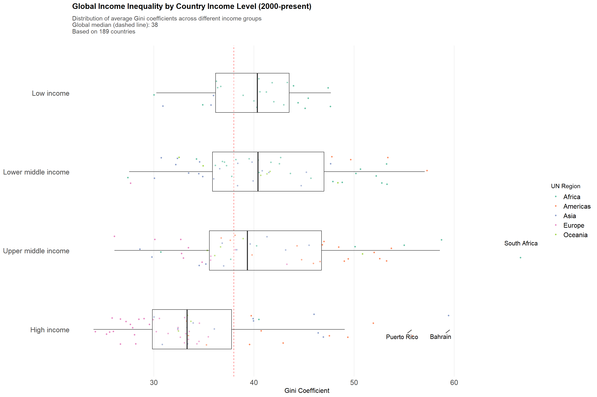
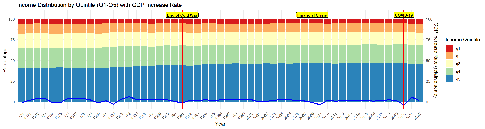
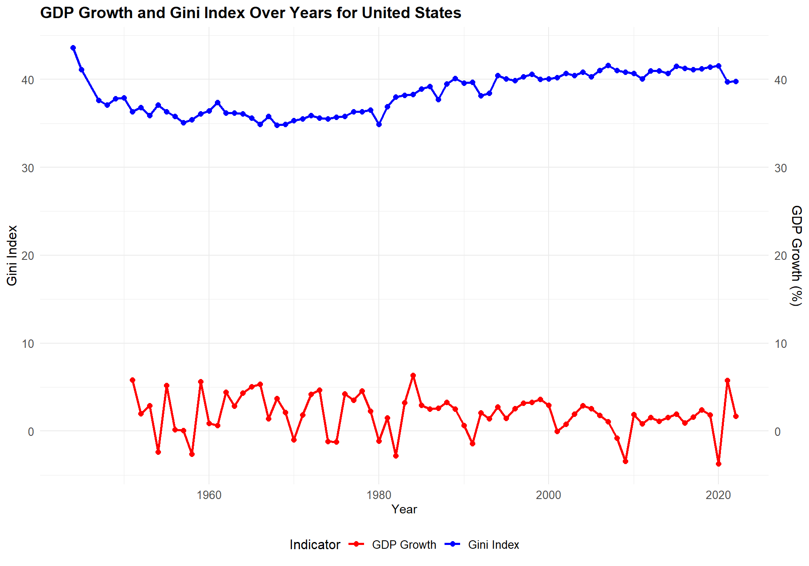
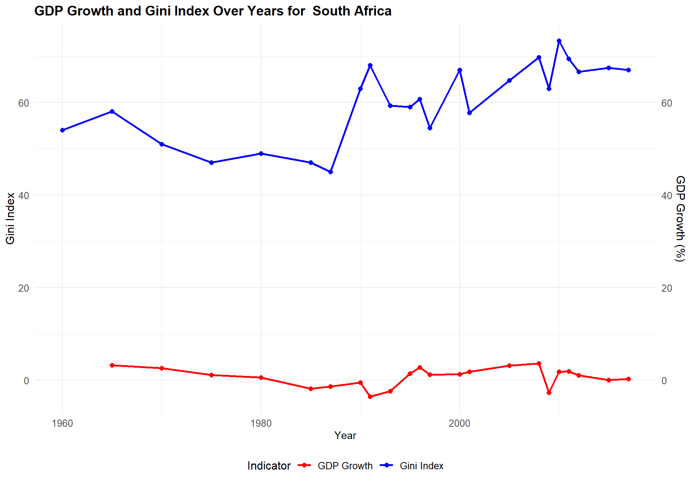
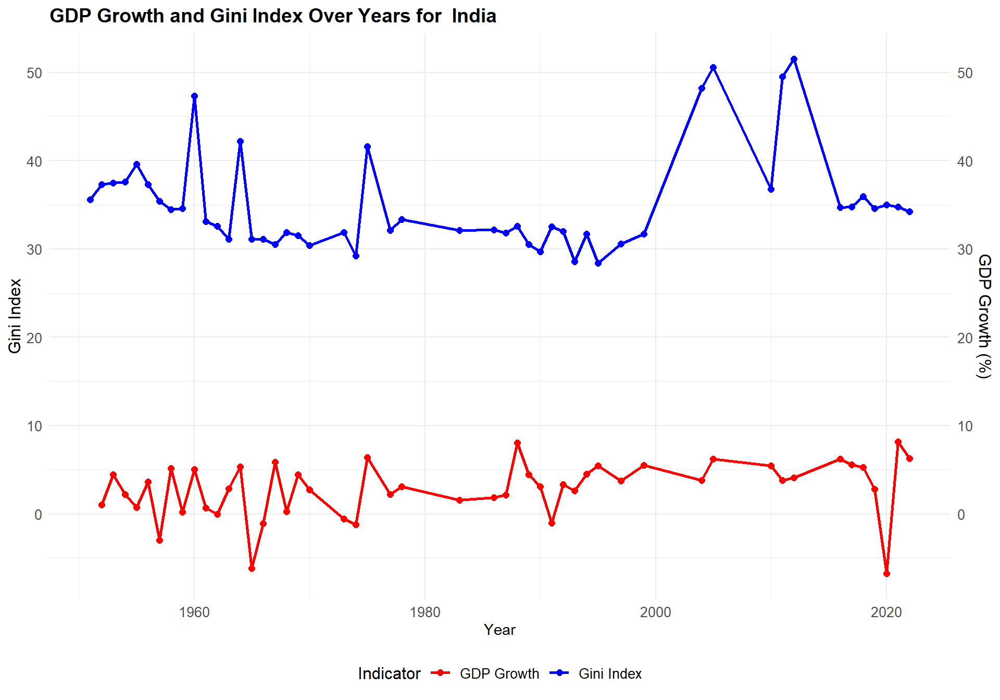

Each of these visualizations combines multiple related aspects into a single, coherent graph that tells a more complete story about different aspects of global inequality.
3.1Data Collection Trends on Global Income Inequality
This visualization presents global income inequality data from 1900 to 2022 in two complementary panels:
Top Panel - Data Coverage shows the evolving number of observations across different resource types (Consumption, Earnings, and Income variants), highlighting the dramatic increase in data collection since 1980.
Bottom Panel - Data Quality reveals the composition and reliability of measurements over time, with proportions of high, average, and low-quality data for each resource category, as noted by the collector.
These panels demonstrate both the expanding scope of inequality measurement and improvements in data quality.
Code
# ------------------------------------------------------------------------# DATA PREPARATION# ------------------------------------------------------------------------# Convert resource and quality to factors with specific level ordering# This affects the order of appearance in plots - modify levels to change orderdata <- data |>mutate(resource =factor(resource, levels =c("Consumption", "Earnings", "Income (gross)", "Income (net)", "Income (net/gross)")),quality =factor(quality, levels =c("High", "Average", "Low", "Not known")) )# Calculate observation counts per year and resource type# Filtered to 1900-2022 for meaningful visualizationobs_counts <- data |>count(year, resource) |>filter(!is.na(resource), !is.na(year), year >=1900, year <=2022)quality_comp <- data |>filter(!is.na(resource), !is.na(quality), !is.na(year), year >=1900, year <=2022) |>group_by(year, resource) |>count(quality) |>mutate(prop = n /sum(n)) |># This ensures proportions sum to 1ungroup()# ------------------------------------------------------------------------# COLOR DEFINITIONS# ------------------------------------------------------------------------# Custom color palettes - modify hex codes to change colors# Light pastel colors for resourcesresource_colors <-c("Consumption"="#FFB5B5", # Light pink"Earnings"="#66B2B2", # Teal"Income (gross)"="#85C1E9", # Light blue"Income (net)"="#A3D39C", # Light green"Income (net/gross)"="#FFE0A4"# Light yellow)# Green gradient for quality ratingsquality_colors <-c("High"="#2E7D32", # Dark green"Average"="#81C784", # Medium green"Low"="#C8E6C9", # Light green"Not known"="#EEEEEE"# Light grey)# ------------------------------------------------------------------------# PLOT CREATION# ------------------------------------------------------------------------# Top panel: Number of observations over time# Modify breaks, text sizes, or alpha for different visual effectsp1 <-ggplot(obs_counts, aes(x = year, y = n, fill = resource)) +geom_area(position ="stack", alpha =0.8) +scale_fill_manual(values = resource_colors, name ="Resource Type") +scale_x_continuous(breaks =seq(1900, 2020, 40)) +scale_y_continuous(breaks =seq(0, 1000, 250)) +labs(title ="Distribution of Observations Over Time",subtitle ="Stacked area chart showing the number of observations by resource type",y ="Number of\nObservations", x =NULL) +theme_minimal() +theme(legend.position ="right",panel.grid.minor =element_blank(),axis.text =element_text(size =10),axis.title =element_text(size =12),plot.title =element_text(size =14, face ="bold"),plot.subtitle =element_text(size =11, color ="grey30") )p3 <-ggplot(quality_comp, aes(x = year, y = prop, fill = quality)) +geom_area(position ="fill", alpha =0.8) +# Changed to position = "fill"facet_wrap(~resource, ncol =5, scales ="free_x") +scale_fill_manual(values = quality_colors, name ="Quality") +scale_x_continuous(breaks =c(1900, 2000)) +scale_y_continuous(labels = scales::percent_format(), breaks =seq(0, 1, 0.25)) +labs(title ="Data Quality Composition by Resource Type",subtitle ="Proportion of quality ratings over time for each resource category",y ="Proportion of\nQuality Ratings", x ="Year") +theme_minimal() +theme(strip.text =element_text(size =9, margin =margin(b =5)),panel.grid.minor =element_blank(),axis.text =element_text(size =8),axis.title =element_text(size =12),legend.position ="right",panel.spacing.x =unit(0.5, "lines"),plot.title =element_text(size =14, face ="bold"),plot.subtitle =element_text(size =11, color ="grey30") )# Combine only p1 and p3combined_plot <- (p1 /plot_spacer() / p3) +plot_layout(heights =c(1, 0.1, 1)) &# Adjusted heights for two plotstheme(plot.margin =margin(5, 5, 5, 5))# Add main titlecombined_plot <- combined_plot +plot_annotation(title ="Global Income Inequality Trends",subtitle ="Analysis of income inequality measures, data coverage, and quality across different resource types",theme =theme(plot.title =element_text(size =20, face ="bold", hjust =0.5, margin =margin(b =5) ),plot.subtitle =element_text(size =14, color ="grey30", hjust =0.5, margin =margin(b =20) ) ) )combined_plot
These plots show a dramatic increase in the volume and quality of global inequality data over time. Before 1980, there were few observations and limited reliability. Since then, the number of measurements has surged, reaching nearly a thousand annually. At the same time, the proportion of high-quality data across all income and consumption categories has steadily grown. Together, these trends offer a far clearer and more dependable understanding of worldwide income inequality today than ever before.
3.2How has income inequality (Gini index) been distributed and changing around the world?
The Gini coefficient is a widely used metric to measure income inequality within a group of population, ranging from 0 to 1, where 1 represents absolute income inequality and 0 represents absolute income equality. From this interactive graph, we can observe that the Gini coefficient varies significantly across countries worldwide. The areas with lighter color represent high Gini values, indicating severe income inequality. Due to the lack of comprehensive global data, it is challenging to identify clear trends in global Gini. However, we can observe trends for individual countries. For example, in the United States and most European countries, the Gini coefficient has not shown significant changes over the last 50 years. In contrast, for Asian countries such as China and India, the Gini coefficient has exhibited an upward trend over the past 20 years, as reflected in the gradually lighter changing colors.
Code
data_gini_all_year <- data %>%group_by(country, year) %>%arrange(desc(!is.na(gini)),desc(!is.na(q1)),desc(popcovr =="All"), resource =="Earnings") %>%slice(1) %>%ungroup()data_gini_2022 <- data_gini_all_year |>filter(year ==2016)# Data frame with Gini Indexdata_gini <-data.frame(country = data_gini_2022$country,gini = data_gini_2022$gini,c3 = data_gini_2022$c3,postal = data_gini_2022$c2)all_countries <-unique(data_gini_all_year$country)all_years <-seq(1950, 2021)# Step 2: Create a complete grid of country and yearcomplete_grid <-expand.grid(country = all_countries, year = all_years)# Populate the grid with Gini coefficient datacomplete_grid$gini <-NAcomplete_grid$gini <- data_gini_all_year$gini[match(paste(complete_grid$country, complete_grid$year, sep ="_"),paste(data_gini_all_year$country, data_gini_all_year$year, sep ="_") )]complete_grid$c3 <- data_gini_all_year$c3[match(complete_grid$country, data_gini_all_year$country)]# Prepare spatial dataworld <-ne_countries(scale ="medium", returnclass ="sf")complete_grid$geometry <- world$geometry[match(complete_grid$c3, world$iso_a3_eh)]# Convert year to a factor for animationplot_data <- complete_grid %>%mutate(year =as.factor(year))# Define the range for the Gini coefficientgini_min <-min(plot_data$gini, na.rm =TRUE)gini_max <-max(plot_data$gini, na.rm =TRUE)# Create Plotly Choropleth Mapfig <-plot_ly(data = plot_data,type ="choropleth",locations =~c3, # Use the ISO3 column for country codeslocationmode ="ISO-3", # ISO Alpha-3 codes for mappingz =~gini, # Gini coefficient valuesframe =~year, # Animation frames by yeartext =~paste(country, "<br>Gini Coefficient:", gini),hoverinfo ="text",colorscale ="Viridis", # Use RdYlGn color scale for the mapzmin = gini_min, # Set the minimum for the color scalezmax = gini_max, # Set the maximum for the color scalecolorbar =list(title ="Gini Coefficient"))# Customize Layoutfig <- fig %>%layout(title ="World Gini Coefficients Over Time",geo =list(projection =list(type ="natural earth"),showcoastlines =TRUE ) )# Display the Mapfig
3.3Global Income Inequality by Economic Development Level
This visualization highlights how average income inequality relates to countries’ economic development since 2000. Each boxplot represents a World Bank income classification, with points indicating the mean Gini coefficient for individual countries over the period. A dashed line denotes the global median Gini value for easy reference, and labels draw attention to particularly high-inequality cases. By focusing on long-term averages rather than year-by-year data, the plot unveils enduring patterns in how typical inequality levels differ across varying stages of economic development.
Note: Higher Gini coefficients indicate greater income inequality (scale: 0–100). The underlying data prioritizes comprehensive national measures over partial or earnings-based observations.
Code
income_gini <- data |># Prioritize data sourcesgroup_by(country, year) |>arrange(desc(!is.na(gini)),desc(popcovr =="All"), resource =="Earnings") |>slice(1) |>ungroup() |>filter(!is.na(gini), year >=2000) |>mutate(incomegroup =factor(incomegroup, levels =c("High income", "Upper middle income", "Lower middle income", "Low income"),ordered =TRUE) ) |>filter(!is.na(incomegroup)) |># Include region_un in the groupinggroup_by(country, incomegroup, region_un) |>summarize(gini =mean(gini),n_obs =n(),.groups ="drop" ) |># Identify outliersgroup_by(incomegroup) |>mutate(is_outlier = gini >quantile(gini, 0.75) +1.5*IQR(gini) | gini <quantile(gini, 0.25) -1.5*IQR(gini),label =ifelse(is_outlier & gini >quantile(gini, 0.98), country, NA) ) |>ungroup()global_median <-median(income_gini$gini, na.rm =TRUE)income_gini_boxplot <-ggplot(income_gini, aes(x = gini, y = incomegroup)) +geom_vline(xintercept = global_median,linetype ="dashed", color ="red", alpha =0.7) +# Color points by region_ungeom_jitter(aes(color = region_un),alpha =1,height =0.2, size =1,width =0.3) +geom_boxplot(fill ="white", alpha =0.3, outlier.shape =NA,width =0.5) +geom_text_repel(aes(label = label),na.rm =TRUE,size =4,max.overlaps =8,box.padding =0.5,force =10 ) +scale_color_brewer(palette ="Set2", name ="UN Region") +labs(title ="Global Income Inequality by Country Income Level (2000-present)",subtitle =paste0("Distribution of average Gini coefficients across different income groups\n","Global median (dashed line): ", round(global_median, 1),"\nBased on ", n_distinct(income_gini$country), " countries"),x ="Gini Coefficient",y =NULL ) +scale_x_continuous(breaks =seq(20, 80, 10)) +theme_minimal() +theme(panel.grid.minor =element_blank(),panel.grid.major.y =element_blank(),axis.text =element_text(size =13),axis.title =element_text(size =12),plot.title =element_text(size =14, face ="bold", margin =margin(b =10)),plot.subtitle =element_text(size =11, color ="grey30", margin =margin(b =20)),legend.text =element_text(size =12) )income_gini_boxplot

Overall, the analysis shows that higher income-level countries tend to have lower income inequality on average, while lower income-level countries often have inequality levels closer to or above the global median. The plot also highlights a few specific nations with especially high inequality. Together, these patterns suggest that as a country becomes more economically developed, it generally experiences more moderate income inequality.
3.4Economic Development and Income Inequality Analysis
This visualization examines the relationship between economic development (GDP per capita) and income inequality (Gini coefficient) across different regions. For each decade since 2000, we track the three countries with highest and lowest inequality from each region, taking into account population size. The dual-panel view allows us to contrast patterns between high and low inequality countries, revealing how economic development relates to income distribution across different contexts.
Note: GDP per capita is shown on a logarithmic scale to better display relationships across different income levels. Point size indicates population.
Code
# First, get preferred gini values by prioritizingdata_clean <- data |>group_by(country, year) |>arrange(desc(!is.na(gini)),desc(popcovr =="All"), resource =="Earnings") |>slice(1) |>ungroup()# Function to get top/bottom 3 countries for each region in a given decadeget_extreme_countries <-function(data, decade_start, is_top =TRUE) { ordering_fn <-if(is_top) slice_max else slice_min data |>filter(year >= decade_start, year < decade_start +10,!is.na(gini), !is.na(gdp), !is.na(population),!is.na(region_un)) |>group_by(region_un, country) |>summarize(gini =mean(gini),gdp =mean(gdp),population =mean(population),.groups ="drop" ) |>group_by(region_un) |>ordering_fn(order_by = gini, n =3, with_ties =FALSE) |>mutate(decade =paste0(decade_start, "s"))}# Get data for each decadetop_data_2000 <-get_extreme_countries(data_clean, 2000, TRUE)top_data_2010 <-get_extreme_countries(data_clean, 2010, TRUE)top_data_2020 <-get_extreme_countries(data_clean, 2020, TRUE)bottom_data_2000 <-get_extreme_countries(data_clean, 2000, FALSE)bottom_data_2010 <-get_extreme_countries(data_clean, 2010, FALSE)bottom_data_2020 <-get_extreme_countries(data_clean, 2020, FALSE)# Combine all dataplot_data <-bind_rows( top_data_2000, top_data_2010, top_data_2020, bottom_data_2000, bottom_data_2010, bottom_data_2020) |>mutate(log_gdp =log10(gdp),pop_scaled =sqrt(population)/10000,type =ifelse(gini >median(gini), "High Inequality", "Low Inequality") )# Create custom theme with larger text sizescustom_theme <-theme_minimal() +theme(panel.spacing.x =unit(1, "cm"),# Increase title sizeplot.title =element_text(size =20, face ="bold"),# Increase axis text and title sizesaxis.title =element_text(size =18),axis.text =element_text(size =16),# Increase legend text sizelegend.title =element_text(size =18),legend.text =element_text(size =16),# Increase facet label sizestrip.text =element_text(size =16, face ="bold") )gdp_range <-range(plot_data$log_gdp, na.rm =TRUE)x_limits <-c(floor(gdp_range[1]), ceiling(gdp_range[2]))# High inequality plothigh_ineq_plot <-ggplot(filter(plot_data, type =="High Inequality"), aes(x = log_gdp, y = gini)) +geom_point(aes(size = pop_scaled, color = region_un), alpha =0.7) +geom_text_repel(aes(label = country), size =5) +# Increased from 4 to 5facet_wrap(~decade) +scale_x_continuous(limits = x_limits,breaks =log10(c(1000, 10000, 100000)),labels =c("1,000", "10,000", "100,000") ) +scale_size_continuous(name ="Population (millions)",breaks =sqrt(c(100, 500, 1000))/10000,labels =c("100M", "500M", "1B") ) +scale_color_brewer(palette ="Set2") +labs(title ="Highest Inequality Countries by Region",x ="GDP per capita (USD, log scale)",y ="Gini Coefficient",color ="Region" ) + custom_theme# Low inequality plotlow_ineq_plot <-ggplot(filter(plot_data, type =="Low Inequality"), aes(x = log_gdp, y = gini)) +geom_point(aes(size = pop_scaled, color = region_un), alpha =0.7) +geom_text_repel(aes(label = country), size =5) +# Increased from 4 to 5facet_wrap(~decade) +scale_x_continuous(limits = x_limits,breaks =log10(c(1000, 10000, 100000)),labels =c("1,000", "10,000", "100,000") ) +scale_size_continuous(name ="Population (millions)",breaks =sqrt(c(100, 500, 1000))/10000,labels =c("100M", "500M", "1B") ) +scale_color_brewer(palette ="Set2") +labs(title ="Lowest Inequality Countries by Region",x ="GDP per capita (USD, log scale)",y ="Gini Coefficient",color ="Region" ) + custom_theme# Combine plots verticallyscatter_gini_gdp <- high_ineq_plot / low_ineq_plot +plot_layout(guides ="collect") &theme(legend.position ="right")scatter_gini_gdp
This visualization highlights two key points in global inequality over the past two decades. The top panels have the most unequal nations, where countries from Africa consistently rank at the top few. The bottom panels show the least unequal societies, many of which are European, but also include lower-income countries such as Kyrgyzstan and Ethiopia—suggesting that prosperity alone does not guarantee greater equality.
Overall, these patterns challenge the assumption that higher income levels automatically lead to less inequality. Instead, the distribution of income appears more influenced by domestic policies, institutions, and social choices than by economic status alone.
3.5Do major economic events have an effect on the income distribution of the country?
The following two graphs show the share of total GDP accounted for by each 20% population group, divided by income, from 1970 to 2022. The bottom blue line in each graph represents the GDP growth rate for the corresponding year.
Code
data_US <- data |>filter(country =='Brazil')data_US_unique <- data_US %>%group_by(country, year) %>%arrange(desc(!is.na(q1)), # Prioritize rows with non-null q1desc(popcovr =="All"), # Then prioritize popcovr == "All" resource =="Earnings") %>%# Then prioritize resource == "Earnings"slice(1) %>%# Select the first row after sortingungroup() # Define the range of years to display (1970–2022)all_years <-seq(1970, 2022)# Prepare data for the bar plot (q1-q5)data_US_long <- data_US_unique %>%filter(year >=1970& year <=2022) %>%# Filter for the year rangeselect(year, q1, q2, q3, q4, q5, gdp_increase_rate) %>%# Include GDP increase ratepivot_longer(cols = q1:q5, names_to ="Income_Class", values_to ="Percentage") %>%mutate(Percentage =replace_na(Percentage, 0)) %>%# Replace NA with 0complete(year = all_years, Income_Class =unique(.$Income_Class), fill =list(Percentage =0))# Create the stacked bar chart with GDP increase rate line overlayggplot(data_US_long, aes(x =factor(year))) +geom_bar(aes(y = Percentage, fill = Income_Class), stat ="identity") +# Stacked bar chartgeom_line(data = data_US_unique %>%filter(year >=1970& year <=2022), aes(y = gdp_increase_rate, group =1), color ="blue", size =1.2) +# Line plot for GDP increase rategeom_vline(xintercept =as.numeric(factor(2020, levels = all_years)), color ="red", size =0.8) +geom_label(aes(x =as.numeric(factor(2020, levels = all_years)), y =105), # Place the label slightly above the maximum bar heightlabel ="COVID-19", fill ="yellow", # Highlight colorcolor ="black", # Text colorfontface ="bold", size =3) +geom_vline(xintercept =as.numeric(factor(1994, levels = all_years)), color ="red", size =0.8) +geom_label(aes(x =as.numeric(factor(1994, levels = all_years)), y =105), # Place the label slightly above the maximum bar heightlabel ="BRL Introduced", fill ="yellow", # Highlight colorcolor ="black", # Text colorfontface ="bold", size =3) +geom_vline(xintercept =as.numeric(factor(1980, levels = all_years)), color ="red", size =0.8) +geom_label(aes(x =as.numeric(factor(1980, levels = all_years)), y =105), # Place the label slightly above the maximum bar heightlabel ="Debt Crisis", fill ="yellow", # Highlight colorcolor ="black", # Text colorfontface ="bold", size =3) +geom_hline(yintercept =0, linetype ="dashed", color ="red", size =0.5) +# Line for y = 0scale_fill_brewer(palette ="Spectral", name ="Income Quintile") +# Use discrete color palettelabs(title ="Brazil Income Distribution by Quintile (Q1-Q5) with GDP Increase Rate",x ="Year",y ="Percentage") +theme_minimal() +theme(axis.text.x =element_text(angle =45, hjust =1)) +scale_y_continuous(sec.axis =sec_axis(~ ., name ="GDP Increase Rate (relative scale)"))
From Brazil’s graph, we observe that the top 20% income group accounted for over 60% of the country’s total GDP prior to 1994. Additionally, both GDP distribution and growth rates showed significant annual fluctuations. After the introduction of the new currency, the Brazilian Real, the income share of the bottom 20% gradually increased, GDP growth rate fluctuations reduced, and income inequality in the country began to alleviate.
Code
data_US <- data |>filter(country =='United States')data_US_unique <- data_US %>%group_by(country, year) %>%arrange(desc(!is.na(q1)), # Prioritize rows with non-null q1desc(popcovr =="All"), # Then prioritize popcovr == "All" resource =="Earnings") %>%# Then prioritize resource == "Earnings"slice(1) %>%# Select the first row after sortingungroup() # Define the range of years to display (1970–2022)all_years <-seq(1970, 2022)# Prepare data for the bar plot (q1-q5)data_US_long <- data_US_unique %>%filter(year >=1970& year <=2022) %>%# Filter for the year rangeselect(year, q1, q2, q3, q4, q5, gdp_increase_rate) %>%# Include GDP increase ratepivot_longer(cols = q1:q5, names_to ="Income_Class", values_to ="Percentage") %>%mutate(Percentage =replace_na(Percentage, 0)) %>%# Replace NA with 0complete(year = all_years, Income_Class =unique(.$Income_Class), fill =list(Percentage =0))# Create the stacked bar chart with GDP increase rate line overlayggplot(data_US_long, aes(x =factor(year))) +geom_bar(aes(y = Percentage, fill = Income_Class), stat ="identity") +# Stacked bar chartgeom_line(data = data_US_unique %>%filter(year >=1970& year <=2022), aes(y = gdp_increase_rate, group =1), color ="blue", size =1.2) +# Line plot for GDP increase rategeom_vline(xintercept =as.numeric(factor(2020, levels = all_years)), color ="red", size =0.8) +geom_label(aes(x =as.numeric(factor(2020, levels = all_years)), y =105), # Place the label slightly above the maximum bar heightlabel ="COVID-19", fill ="yellow", # Highlight colorcolor ="black", # Text colorfontface ="bold", size =3) +geom_vline(xintercept =as.numeric(factor(2008, levels = all_years)), color ="red", size =0.8) +geom_label(aes(x =as.numeric(factor(2008, levels = all_years)), y =105), # Place the label slightly above the maximum bar heightlabel ="Financial Crisis", fill ="yellow", # Highlight colorcolor ="black", # Text colorfontface ="bold", size =3) +geom_vline(xintercept =as.numeric(factor(1991, levels = all_years)), color ="red", size =0.8) +geom_label(aes(x =as.numeric(factor(1991, levels = all_years)), y =105), # Place the label slightly above the maximum bar heightlabel ="End of Cold War", fill ="yellow", # Highlight colorcolor ="black", # Text colorfontface ="bold", size =3) +geom_hline(yintercept =0, linetype ="dashed", color ="red", size =0.5) +# Line for y = 0scale_fill_brewer(palette ="Spectral", name ="Income Quintile") +# Use discrete color palettelabs(title ="Income Distribution by Quintile (Q1-Q5) with GDP Increase Rate",x ="Year",y ="Percentage") +theme_minimal() +theme(axis.text.x =element_text(angle =45, hjust =1)) +scale_y_continuous(sec.axis =sec_axis(~ ., name ="GDP Increase Rate (relative scale)"))

Compared to Brazil, the United States shows a significantly more stable income distribution. Over the past fifty years, there have been no substantial fluctuations in the income share of each quantile group, except for a steady increase in the share of the highest income group (represented by the blue q5 bar), which aligns with the gradually rising Gini coefficient in the United States. Even during major financial events such as the 2008 financial crisis, the income distribution in the U.S. remained largely unchanged. This stability may be attributed to the relatively consistent economic growth trajectory in the U.S. (represented by the dark blue GDP growth curve), where even significant economic events have not caused large fluctuations to the GDP growth rate.
3.6What potential factors could indicate a country’s income inequality?
Code
data_GDP_2020 <- data |>filter(year ==2015)data_GDP_2020 <- data_GDP_2020 %>%group_by(country) %>%arrange(desc(!is.na(q1)), desc(popcovr =="All"), resource =="Earnings") %>%slice(1) %>%ungroup() # Create the new column 'GDP_class' based on gdp_increase_ratedata_GDP_2020$gdp_growth_speed <-ifelse(data_GDP_2020$gdp_increase_rate >4, "high",ifelse(data_GDP_2020$gdp_increase_rate >=1, "mid", "low"))# Convert the new column to a factor (optional, for categorical treatment)data_GDP_2020$gdp_growth_speed <-factor(data_GDP_2020$gdp_growth_speed, levels =c("low", "mid", "high"))developed_countries <-c("AND", "AUS", "AUT", "BEL", "CAN", "DNK", "FIN", "FRA", "DEU", "ISL", "IRL", "ITA", "JPN", "LUX", "NLD", "NZL", "NOR", "PRT", "ESP", "SWE", "CHE", "GBR", "USA")# Create a new column 'developed' with Yes/No based on the country code in 'c3'data_GDP_2020$developed <-ifelse(data_GDP_2020$c3 %in% developed_countries, "Yes", "No")# Create a new categorical variable 'gini_type' based on the 'gini' columndata_GDP_2020$gini_type <-ifelse(data_GDP_2020$gini <30, "Low",ifelse(data_GDP_2020$gini <=40, "Mid", "High"))# Convert the new column to a factor (optional)data_GDP_2020$gini_type <-factor(data_GDP_2020$gini_type, levels =c("Low", "Mid", "High"))vcd::mosaic(gini_type ~ gdp_growth_speed + developed, data = data_GDP_2020, labeling_args =list(gp_labels =gpar(fontsize =9) # Set font size for labels ),highlighting_fill =c("lightgreen", "lightgoldenrod", "lightcoral"),main ="Gini Classify by GDP and Development")
This mosaic plot shows the proportion of each gini index type for developed and developing countries, further categorized by their GDP growth rates. GDP growth rate does not appear to have a direct relationship with a country’s income inequality, as represented by the Gini index. Countries with low, medium, and high GDP growth rates exhibit similar distributions across the different Gini categories. On the other hand, a country’s level of development can be a critical factor influencing income inequality. Developed countries generally experience less severe income inequality, as shown in the graph, where almost no developed country falls within the high Gini index category. Instead, developed nations are mostly characterized by low or medium Gini indices.
3.7The Transition of Countries Across Gini Groups Over Time
The Alluvial plot highlights how countries flow through three different periods: 1990-2000,2000-2010 and 2010-2022. So we can see the mobility of the countries in gini categories.
From the Plot, we can see most countries stay in one categories for three periods, which means most countries with high gini in 1990-2000 were still with high gini in 2000-2010 and 2010-2022, which indicates the general stability of the gini and the difficulty of improving income inequality. However, there are still some countries with high gini in 1990-2000 ending in low and mid gini group in 2010-2022. And there are no countries with low gini in 1990-2010 ending in high gini group in 2010-2022 while there are very few countries with mid gini in 1990-2000 ending in high gini group in 2010-2022. This further shows that countries with less income inequality have performed well in preventing the problem from getting worse.
Overall, this chart reflects the overall stability of the Gini coefficient and the significant efforts of some countries to reduce income inequality, while also highlighting the success of countries that originally had less income inequality in maintaining stability
3.8How Gini of countries has been changed from 1950-2000 to 2000-2022
This Cleveland plot shows average gini for countries in two periods:1950-2000 and 2000-2022. The average Gini of each country is calculated using the available Gini index of each year during that period. This plot captures the trends in income inequality across countries over time. Blue dots represent the Gini in period 2000-2022 and red dots represent the Gini in period 1950-2000. The link linking the two points indicates a change of gini from 1950-2000 to 2000-2022 so a longer line means a bigger change happening over time.
Code
data_nomissing <- data[rowSums(is.na(data)) <=4, ]data_allpopuallarea <- data |>filter(popcovr =='All', areacovr =='All', scale =='Per capita', resource =='Income (net)')data_median <- data |>group_by(country, year) |>arrange(desc(!is.na(gini)),desc(popcovr =="All"),resource =="Earnings") |>slice(1) |>ungroup() data_avg <- data_median |>mutate(period =case_when( year >=1950& year <=2000~"1950-2000", year >2000& year <=2022~"2000-2022",TRUE~NA_character_ )) |>filter(!is.na(period)) |>group_by(country, period) |>summarise(avg_gini =mean(gini, na.rm =TRUE), .groups ="drop") |>pivot_wider(names_from = period, values_from = avg_gini) |>left_join(data_median |>select(country, region_un_sub) |>distinct(), by ="country") |>mutate(has_recent_data =ifelse(is.na(`2000-2022`), 0, 1)) |>arrange(has_recent_data, `2000-2022`) |>mutate(country_order =factor(country, levels = country))ggplot(data_avg, aes(y = country_order)) +geom_point(aes(x =`2000-2022`, color ="2000-2022"), size =2) +geom_point(aes(x =`1950-2000`, color ="1950-2000"), size =2) +geom_segment(aes(x =`1950-2000`, xend =`2000-2022`, y = country_order, yend = country_order),color ="gray" ) +theme_minimal() +theme(axis.text.y =element_text(size =8),legend.position ="right",legend.title =element_text(size =10), legend.text =element_text(size =9) ) +labs(title ="Comparison of Average Gini Coefficients (1950-2000 vs 2000-2022)",x ="Average Gini Coefficient",y ="Country",color ="Period" ) +scale_color_manual(values =c("1950-2000"="red", "2000-2022"="blue"))
Looking at the graph in general, we can see that Gini trends vary across countries and regions. Inequality has risen in some countries, while it has remained relatively stable or even fallen in others, reflecting the impact of global economic developments and policy differences. Most countries have both 1950-2000 and 2000-2022 data. However, some countries face the problem of missing data for the most recent period in 2000-2022, which are displayed at the bottom of the plot.
Some countries remain high Gini in these two periods including South Africa,Hajti and Brazil in both periods. Among countries with the highest Gini Coefficient, more countries have some degree of increase in Gini while only a few countries improve their inequality and reduce the Gini coefficient like Nambia and Zambia. Further more, Countries with similar Gini Coefficients often have common features in their economic structure, policy choices, or regional influences. For example, Latin American countries generally have high Gini Coefficients, while Western European countries have relatively low Gini
At the end when looking at the pattern more broadly, across all countries, there more countries having Gini dramatically decreased or remaining stable compared to those encountering huge increase in Gini. So it reflects most countries did well in controlling the income inequality.
3.9How Gini of Top and bottom 5 Countries by GDP in Each Region evlovs through time
Seeing the gini index for two periods, we want to see if region will influence the change of gini over time. Considering huge amount of countries in each region, we decide to sample the 5 countries with the highest GDP and the lowest GDP in each region.
This two scatter plot and smooth line show how income inequality changed over time in the top 5 countries with the highest GDP in each region. The Gini coefficient is used to measure income inequality, with higher values indicating greater inequality.
Code
n <-5filtered_by_points <- data_median |>group_by(region_un, country) |>filter(n() >=5) |>ungroup()top_countries_by_region <- filtered_by_points |>group_by(region_un, country) |>summarise(max_gdp =max(gdp, na.rm =TRUE), .groups ="drop") |>group_by(region_un) |>slice_max(max_gdp, n = n) |>pull(country)filtered_data <- filtered_by_points |>filter(country %in% top_countries_by_region)start_points <- filtered_data |>group_by(region_un, country) |>filter(year ==min(year)) |>ungroup()ggplot(filtered_data, aes(x = year, y = gini)) +geom_point(aes(color = country), size =0.5) +geom_smooth(aes(group = country,color=country), method ="loess", se =FALSE, size =1, linetype ="solid") +geom_text_repel(data = start_points,aes(label = country, color = country),size =3,max.overlaps =8,direction ="both",segment.color ="gray50" ) +facet_wrap(~ region_un, scales ="free_x", ncol =2) +labs(title =paste("Top", n, "Countries by Maximum GDP in Each Region"),x ="Year",y ="Gini Coefficient",color ="Country" ) +theme_minimal() +theme(legend.position ="None",legend.text =element_text(size =8),strip.text =element_text(size =10) )
It is surprising to see that the top countries in some region have similar trends of Gini. In particular, top countries in European have almost the same trends of Gini and each Gini line stays really close to each other. This is could resulted in because of the close cooperation and connections between these European countries.
Africa and Asia exhibit more volatile patterns compared to the relatively stable trends in Europe and Americas. And Countries in Africa generally have high Gini and Gabon even reached gini of 70 which indicates a severe income inequality.
Generally speaking, Developed economics like United States,Canada and Australia demonstrate relatively stable Gini Coefficients while The Gini coefficients in developing regions (such as Africa and Asia) are higher and more volatile, which may reflect differences in economic structure, government policies, and social distribution systems among regions.
This two scatter plot and smooth line show how income inequality changed over time in the bottom 5 countries with the lowest GDP in each region. The Gini coefficient is used to measure income inequality, with higher values indicating greater inequality.
Oceania has too few countries for the top and bottom five. The plots for Oceania are the same
Countries with lower GDPs generally face greater challenges in controlling income inequality, as reflected in higher and more volatile Gini coefficients across regions. similar to the plot of top 5 countries above, Africa and Asia still exhibit more volatile patterns compared to Europe.
Europe and Oceania have lower and stable Gini coefficients, indicating more advanced social and economic policies. Economic development and inequality
Some countries which is not developed has encountered a problem of increasing income inequality when they were trying to develop their economic. In Africa, Gini of countries like Malawi and Mozambique all increased after some period. This phenomena is associated with their economic growth and introduction of foreign investment. In Asia, China has done well in reducing income inequality from 1960-1980 but the situations worsened after 1980 which match’s the period when China decided to develop its economic according to some newly published policy. In Europe, Gini of Albania has increased during Albania’s economic transition which means the transition from a planned to a market economy had a negative impact on income equality.
3.10Explore GDP growth and Gini in some countries
Previous explorations stimulated our curiosity of the relationship between GDP growth and Gini. So here we decide to take a closer look at some representative countries.
Code
data_us <- data_median |>filter(country =="United States") |>select(year, gini, gdp) |>arrange(year) data_us <- data_us |>mutate(year_diff = year -lag(year),gdp_growth =ifelse(!is.na(year_diff) & year_diff >0, (gdp /lag(gdp))^(1/ year_diff) *100-100, NA ) ) |>select(-year_diff) ggplot(data_us, aes(x = year)) +geom_line(aes(y = gini, color ="Gini Index"), size =1) +geom_point(aes(y = gini, color ="Gini Index"), size =2) +geom_line(aes(y = gdp_growth, color ="GDP Growth"), size =1) +geom_point(aes(y = gdp_growth, color ="GDP Growth"), size =2) +scale_y_continuous(name ="Gini Index", sec.axis =sec_axis(~ ., name ="GDP Growth (%)") ) +scale_color_manual(name ="Indicator",values =c("Gini Index"="blue", "GDP Growth"="red") ) +labs(title ="GDP Growth and Gini Index Over Years for United States",x ="Year" ) +theme_minimal() +theme(axis.text.y.left =element_text(size =10), axis.text.y.right =element_text(size =10), axis.text.x =element_text(size =10), axis.title.y.left =element_text(size =12), axis.title.y.right =element_text(size =12),plot.title =element_text(size =14, face ="bold"), legend.position ="bottom", legend.title =element_text(size =12), legend.text =element_text(size =10) )

From the plot, we can see United States did kind well in controlling the income inequality with only a slight increase in Gini Index to slightly higher than 40. For GDP Growth, it fluctuates around zero but most of time it is positive which means United States developed its economics slowly but steadily while controlling its income inequality well.
Code
data_us <- data_median |>filter(country =="China") |>select(year, gini, gdp) |>arrange(year) data_us <- data_us |>mutate(year_diff = year -lag(year),gdp_growth =ifelse(!is.na(year_diff) & year_diff >0, (gdp /lag(gdp))^(1/ year_diff) *100-100, NA ) ) |>select(-year_diff) ggplot(data_us, aes(x = year)) +geom_line(aes(y = gini, color ="Gini Index"), size =1) +geom_point(aes(y = gini, color ="Gini Index"), size =2) +geom_line(aes(y = gdp_growth, color ="GDP Growth"), size =1) +geom_point(aes(y = gdp_growth, color ="GDP Growth"), size =2) +scale_y_continuous(name ="Gini Index", sec.axis =sec_axis(~ ., name ="GDP Growth (%)") ) +scale_color_manual(name ="Indicator",values =c("Gini Index"="blue", "GDP Growth"="red") ) +labs(title ="GDP Growth and Gini Index Over Years for China",x ="Year" ) +theme_minimal() +theme(axis.text.y.left =element_text(size =10), axis.text.y.right =element_text(size =10), axis.text.x =element_text(size =10), axis.title.y.left =element_text(size =12), axis.title.y.right =element_text(size =12),plot.title =element_text(size =14, face ="bold"), legend.position ="bottom", legend.title =element_text(size =12), legend.text =element_text(size =10) )
China’s economy boomed since 1970 and the growth rate was being positive for most of time, especially since 1990 when the GDP has grown at a rate of 10% or even more. But when we look at the Gini index, it also began to rise alarmingly fast. From this we can see some realtionships of Gini and Index.
Code
data_us <- data_median |>filter(country =="Japan") |>select(year, gini, gdp) |>arrange(year) data_us <- data_us |>mutate(year_diff = year -lag(year),gdp_growth =ifelse(!is.na(year_diff) & year_diff >0, (gdp /lag(gdp))^(1/ year_diff) *100-100, NA ) ) |>select(-year_diff) ggplot(data_us, aes(x = year)) +geom_line(aes(y = gini, color ="Gini Index"), size =1) +geom_point(aes(y = gini, color ="Gini Index"), size =2) +geom_line(aes(y = gdp_growth, color ="GDP Growth"), size =1) +geom_point(aes(y = gdp_growth, color ="GDP Growth"), size =2) +scale_y_continuous(name ="Gini Index", sec.axis =sec_axis(~ ., name ="GDP Growth (%)") ) +scale_color_manual(name ="Indicator",values =c("Gini Index"="blue", "GDP Growth"="red") ) +labs(title ="GDP Growth and Gini Index Over Years for Japan",x ="Year" ) +theme_minimal() +theme(axis.text.y.left =element_text(size =10), axis.text.y.right =element_text(size =10), axis.text.x =element_text(size =10), axis.title.y.left =element_text(size =12), axis.title.y.right =element_text(size =12),plot.title =element_text(size =14, face ="bold"), legend.position ="bottom", legend.title =element_text(size =12), legend.text =element_text(size =10) )
Japan’s GDP data are missing until 1960. After 1960, Japan’s GDP growth rate gradually slowed down and corresponding Gini index began to level off.
Code
coun <-"Burkina Faso"data_us <- data_median |>filter(country == coun) |>select(year, gini, gdp) |>arrange(year) data_us <- data_us |>mutate(year_diff = year -lag(year),gdp_growth =ifelse(!is.na(year_diff) & year_diff >0, (gdp /lag(gdp))^(1/ year_diff) *100-100, NA ) ) |>select(-year_diff) ggplot(data_us, aes(x = year)) +geom_line(aes(y = gini, color ="Gini Index"), size =1) +geom_point(aes(y = gini, color ="Gini Index"), size =2) +geom_line(aes(y = gdp_growth, color ="GDP Growth"), size =1) +geom_point(aes(y = gdp_growth, color ="GDP Growth"), size =2) +scale_y_continuous(name ="Gini Index", sec.axis =sec_axis(~ ., name ="GDP Growth (%)") ) +scale_color_manual(name ="Indicator",values =c("Gini Index"="blue", "GDP Growth"="red") ) +labs(title =paste("GDP Growth and Gini Index Over Years for ",coun),x ="Year" ) +theme_minimal() +theme(axis.text.y.left =element_text(size =10), axis.text.y.right =element_text(size =10), axis.text.x =element_text(size =10), axis.title.y.left =element_text(size =12), axis.title.y.right =element_text(size =12),plot.title =element_text(size =14, face ="bold"), legend.position ="bottom", legend.title =element_text(size =12), legend.text =element_text(size =10) )
Burkina Faso is one of the countries with the largest decrease in the gini index in the Cleveland plot. Looting at its gdp growth rate, we see that it stayed essentially constant but the gini index has declined spectacularly.
Code
coun <-"South Africa"data_us <- data_median |>filter(country == coun) |>select(year, gini, gdp) |>arrange(year) data_us <- data_us |>mutate(year_diff = year -lag(year),gdp_growth =ifelse(!is.na(year_diff) & year_diff >0, (gdp /lag(gdp))^(1/ year_diff) *100-100, NA ) ) |>select(-year_diff) ggplot(data_us, aes(x = year)) +geom_line(aes(y = gini, color ="Gini Index"), size =1) +geom_point(aes(y = gini, color ="Gini Index"), size =2) +geom_line(aes(y = gdp_growth, color ="GDP Growth"), size =1) +geom_point(aes(y = gdp_growth, color ="GDP Growth"), size =2) +scale_y_continuous(name ="Gini Index", sec.axis =sec_axis(~ ., name ="GDP Growth (%)") ) +scale_color_manual(name ="Indicator",values =c("Gini Index"="blue", "GDP Growth"="red") ) +labs(title =paste("GDP Growth and Gini Index Over Years for ",coun),x ="Year" ) +theme_minimal() +theme(axis.text.y.left =element_text(size =10), axis.text.y.right =element_text(size =10), axis.text.x =element_text(size =10), axis.title.y.left =element_text(size =12), axis.title.y.right =element_text(size =12),plot.title =element_text(size =14, face ="bold"), legend.position ="bottom", legend.title =element_text(size =12), legend.text =element_text(size =10) )

South Africa is the top 1 countries in the plot of average gini. So we want to see how its GDP Growth and Gini index changed. For GPD, South Africa nearly does not have any GDP growth and even has some decrease in GDP. However, the gini index increases as year goes on which means the income inequality is increasingly severe important in South Africa with GDP nearly remaining the same.
Code
coun <-"India"data_us <- data_median |>filter(country == coun) |>select(year, gini, gdp) |>arrange(year) data_us <- data_us |>mutate(year_diff = year -lag(year),gdp_growth =ifelse(!is.na(year_diff) & year_diff >0, (gdp /lag(gdp))^(1/ year_diff) *100-100, NA ) ) |>select(-year_diff) ggplot(data_us, aes(x = year)) +geom_line(aes(y = gini, color ="Gini Index"), size =1) +geom_point(aes(y = gini, color ="Gini Index"), size =2) +geom_line(aes(y = gdp_growth, color ="GDP Growth"), size =1) +geom_point(aes(y = gdp_growth, color ="GDP Growth"), size =2) +scale_y_continuous(name ="Gini Index", sec.axis =sec_axis(~ ., name ="GDP Growth (%)") ) +scale_color_manual(name ="Indicator",values =c("Gini Index"="blue", "GDP Growth"="red") ) +labs(title =paste("GDP Growth and Gini Index Over Years for ",coun),x ="Year" ) +theme_minimal() +theme(axis.text.y.left =element_text(size =10), axis.text.y.right =element_text(size =10), axis.text.x =element_text(size =10), axis.title.y.left =element_text(size =12), axis.title.y.right =element_text(size =12),plot.title =element_text(size =14, face ="bold"), legend.position ="bottom", legend.title =element_text(size =12), legend.text =element_text(size =10) )

India is like China, which has huge population. But compared to China, India has more stable GDP growth rate and gini index is also very stable except some years.
Code
coun <-"Slovenia"data_us <- data_median |>filter(country == coun) |>select(year, gini, gdp) |>arrange(year) data_us <- data_us |>mutate(year_diff = year -lag(year),gdp_growth =ifelse(!is.na(year_diff) & year_diff >0, (gdp /lag(gdp))^(1/ year_diff) *100-100, NA ) ) |>select(-year_diff) ggplot(data_us, aes(x = year)) +geom_line(aes(y = gini, color ="Gini Index"), size =1) +geom_point(aes(y = gini, color ="Gini Index"), size =2) +geom_line(aes(y = gdp_growth, color ="GDP Growth"), size =1) +geom_point(aes(y = gdp_growth, color ="GDP Growth"), size =2) +scale_y_continuous(name ="Gini Index", sec.axis =sec_axis(~ ., name ="GDP Growth (%)") ) +scale_color_manual(name ="Indicator",values =c("Gini Index"="blue", "GDP Growth"="red") ) +labs(title =paste("GDP Growth and Gini Index Over Years for ",coun),x ="Year" ) +theme_minimal() +theme(axis.text.y.left =element_text(size =10), axis.text.y.right =element_text(size =10), axis.text.x =element_text(size =10), axis.title.y.left =element_text(size =12), axis.title.y.right =element_text(size =12),plot.title =element_text(size =14, face ="bold"), legend.position ="bottom", legend.title =element_text(size =12), legend.text =element_text(size =10) )
Slovenia, as the country with lowest average Gini in previous plot, has a relatively good GDP growth since 1995.Its Gini index is also very well controlled and basically remains unchanged.